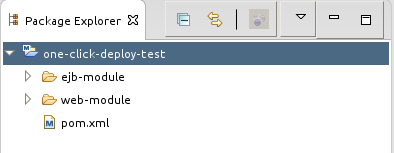
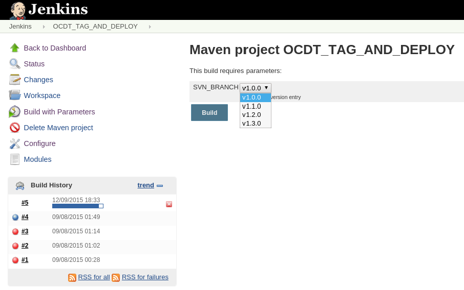

One-Click Deployment in JBoss with Jenkins and Maven
Recently, I automate the build of an application that runs in JBoss EAP 6.3 and uses Maven to project management. In general terms, the automated process was:
- Create tag in SVN
- Download tag and generate a war file
- Send war file to JBoss
- Deactivate current war file in JBoss
- Run scripts in database (PostgreSQL)
- Activate new war file in JBoss
The purpose of this post is describe each of the above topics. I will not show how to install Jenkins or JBoss, I will only present settings I used to automate the build of this application. The process and tools adopted here are only a first step, many improvements can be made, so fits things to meet your project requirements.
The project structure is as follows:
- Main aggregator project
- EJB project (jar)
- Web project(war)

During the post OCDT is short for the project name in Eclipse (One Click Deploy Test).
1 - Create tag in SVN
In this project the development occurs always in a branch and for each released version is created a tag in SVN, this way, the code used in the version is easily recovered if necessary. For achieve this objective I used the maven-release-plugin.
The first step is add in your main pom the scm tag. The maven-release-plugin will use scm.developerConnection for downloading the source code and for creating a new tag in SVN. In my case, the URL points to a branch and the branch name is parametrized through parameter SVN_BRANCH (the name of this parameter can be anyone). The parameter SVN_BRANCH will be informed in the Jenkins build page.
1 | <scm> |
The second step is add and setting the maven-release-plugin in your main pom:
1 | <build> |
The tagNameFormat defines the name of the tag that will be created, for example, whether version is 1.0.0-SNAPSHOT the tag name will be v1.0.0. With maven-scm-provider-svnjava is not necessary to install a svn in the OS because this plugin is a svn-client and the maven-relase-plugin will use it for connecting with SVN.
Now go in Manage Jenkins > Manage Plugins and install “Parameterized Trigger plugin”, this plugin allow us trigger a new job after complete the build and this will be helpful.
The next step is to create a job in Jenkins of type “Maven project” that will use the maven-release-plugin, the name I gave this job was OCDT_TAG_AND_DEPLOY. In Job Configuration page some options are important:
- Check “This build is parameterized”;
- Add a parameter “List Subversion tags (and more)” called SVN_BRANCH. In Repository URL put something like this: http ://yoursvnurl/your-project-name/branches and inform a user/password in “Credentials” option. This Jenkins parameter will replace the maven parameter in scm.developerConnection;
- In Source Code Management check Subversion. In Repository URL put something like http ://yoursvnurl/your-project-name/branches/${SVN_BRANCH}, after enter a user/password for SVN, in Local module directory put ${SVN_BRANCH} and in Check-out Strategy choice “Use ‘svn update’ as much as possible, with ‘svn revert’ before update”;
- In Build > Goals and options enter “release:clean release:prepare -DSVN_BRANCH=${SVN_BRANCH} -Dusername=your_svn_user -Dpassword=your_svn_password”. Here, the SVN credentials are in the clear format, this is not a security way for supplier credentials to the Jenkins, but, for simplifying this post I used this format;
- In Post-build Actions choice “Trigger parameterized build on other projects”. In Projects to Build enter OCDT_DEPLOY (name of the our next job), after in Add Parameters option select “Parameters from properties files” and put ${SVN_BRANCH}/release.properties in field Use properties from file and check option “Don’t trigger if any files are missing”. Still in Add Parameters select too “Current build parameters”. This configuration will run the job OCDT_DEPLOY after this job and will pass your own parameters and all properties in release.properties file (generated by maven-release-plugin) as parameters for OCDT_DEPLOY.
At this point, the jobs are capable of downloading source code in SVN and then generate a tag.

2 - Download tag and generate a war file
After the tag be created, the next step is to download her and then build a war file for deploy in JBoss, for this, we will create new job in Jenkins called OCDT_DEPLOY of type “Maven project”. The job configurations are:
- Check “This build is parameterized”;
- Add a parameter “List Subversion tags (and more)” called scm.tag. In Repository URL put something like this: http ://yoursvnurl/your-project-name/tags and inform a user/password in “Credentials” option. This parameter will be used for parametrizing the SVN URL.
- In Source Code Management check Subversion. In Repository URL put something like http ://yoursvnurl/your-project-name/tags/${scm.tag}, after enter a user/password for SVN, in Local module directory put ${scm.tag} and in Check-out Strategy choice “Use ‘svn update’ as much as possible, with ‘svn revert’ before update”;
- In Build > Goals and options enter “clean package”.
The idea is that the job OCDT_TAG_AND_DEPLOY will generate a tag and pass the tag name for the job OCDT_DEPLOY which will generate a war file based on source code of the tag. The tag name is passed through the release.properties file that contain a property called scm.tag and that points to the tag created by the maven-release-plugin. If you already have a tag, then don’t need execute OCDT_TAG_AND_DEPLOY only executes OCDT_DEPLOY supplying the tag name manually.
At this moment, the web-module/pom.xml has a build setting like this:
1 | <build> |
And the ejb-module/pom.xml has a build setting like this:
1 | <build> |
3 - Send war file to JBoss
If you running the job OCDT_DEPLOY he will generate a war file, but will not do anything with it. For deploy the war file in JBoss some others configurations are needed. Let’s go!
The first thing to do is add the jboss-as-maven-plugin in the project. This plugin has various goals to executes many tasks in a JBoss Server as deploy, start, shutdown among others.
Open main pom.xml and add jboss-as-maven-plugin:
1 | <build> |
For test purposes this setting is ok, but in a production environment is not a good idea have user/password in clear text.
The flag jboss-as.skip is setting for true by default to prevent a deploy in job OCDT_TAG_AND_DEPLOY, this way only in job OCDT_DEPLOY is sent a deploy to JBoss.
In web-module/pom.xml setting jboss-as-maven-plugin:
1 | <build> |
In OCDT_DEPLOY job change the Build > Goals to “clean package post-integration-test -Djboss-as.skip=false”.
This configuration creates a maven execution called upload-war that sends the war file to JBoss without enabling it or disable any other active deploy, this task will be executed in post-integration-test phase. Observe that the execution unassign-war is only needed for domain mode, this is needed because in the next steps we will run another deploy command for activating this war file and if it is assigned to a server-group an error will occur.
At this moment the Jenkins Server will try connect in JBoss Server and some problems can happen, for prevent this, you should guarantee that Jenkins can connect in JBoss through the port 9999, a simple telnet can test this.
4 - Deactivate current war file in JBoss
Now that we have already sent the war file to JBoss the next step is deactivate the current deploy, for this we will add a parameter called ACTIVE_DEPLOY in the two jobs previously created in Jenkins. Go in OCDT_TAG_AND_DEPLOY > Configure > This build is parameterized > Add Parameter and choice “String Parameter”, in Name field put ACTIVE_DEPLOY. Repeat this for OCDT_DEPLOY.
Still in OCDT_DEPLOY change the Build > Goals to “clean package post-integration-test -Djboss-as.skip=false -DACTIVE_DEPLOY=${ACTIVE_DEPLOY}”.
After, creates a new execution for jboss-as-maven-plugin in web-module/pom.xml called deactivate-running-deploy:
1 | <execution> |
5 - Run scripts in database
After sent war file to JBoss and disable the current deploy the next step is running some scripts in the database before active new deploy.
We will use flyway-maven-plugin for this task. Flyway is a tool for database version control and has many features to facilitates this work including SQL or Java migrations.
Add flyway-maven-plugin in managed plugins section in the main pom.xml:
1 | <build> |
In web-module/pom.xml setting flyway-maven-plugin:
1 | <build> |
In my case, the database is Postgres then I add a dependency to the Postgres driver in ejb-module/pom.xml (could be any pom.xml):
1 | <dependencies> |
Now, in OCDT_DEPLOY change the Build > Goals to “clean package post-integration-test -Djboss-as.skip=false -Dflyway.skip=false -DACTIVE_DEPLOY=${ACTIVE_DEPLOY}”.
Create a file in src/main/resources/db/migration folder with name V01.00.00__Populate_Database.sql and put some SQL to change the database. For understand more about how Flyway search scripts and manages versions see documentation.
6 - Activate new war file in JBoss
To finalize, now that the database is compliance with the new war file then we can activate it, for this only is necessary create more one execution in web-module/pom.xml:
1 | <build> |
The end! With steps above you will be capable of automating the build of your project with only one click. The complete code of the example is available in my GitHub.
I am the way, the truth and the life. No one comes to the Father except through me.
Jesus Christ